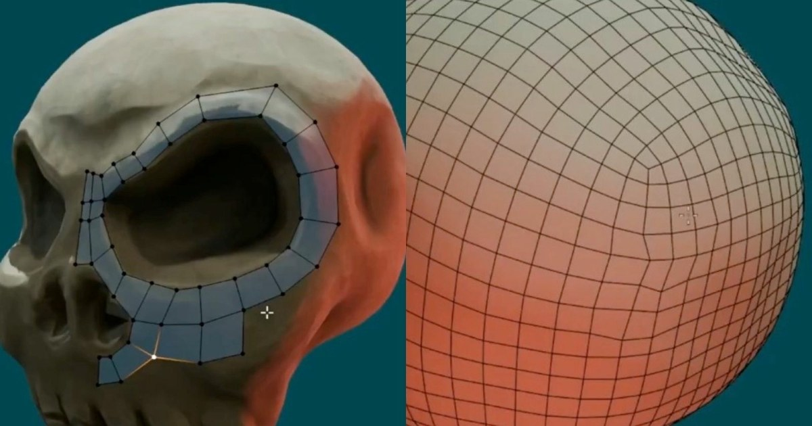

Blender Retopo 小技巧：Ctrl+右鍵連續鋪點、Relax Slide 保體積
Blender Secrets 示範更快鋪設新拓樸與整理點距的手動 retopo 流程。

Blender 技巧 ★★★★☆
完整分析
技術／流程變更
教學示範按住 Ctrl 搭配右鍵快速沿表面鋪設新頂點與邊，再用 Relax Slide 重新分布點位，重點是整理拓樸時不要把原本體積壓扁。
Production 影響
這對角色臉、布料或 AI／掃描網格的手動 cleanup 很實用，可把大量逐點操作縮成連續鋪設與局部放鬆兩個步驟。
導入測試與限制
這是操作技巧而非自動拓樸方案，品質仍取決於 edge flow 規劃；複雜關節、臉部環線與硬表面轉折仍需人工判斷。
BRIEF｜來源已驗證；證據深度較有限，完整分析會明確區分已知資訊與待驗證事項。